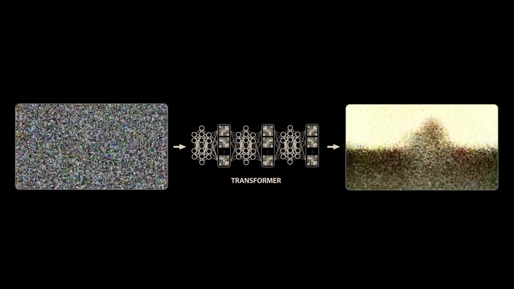
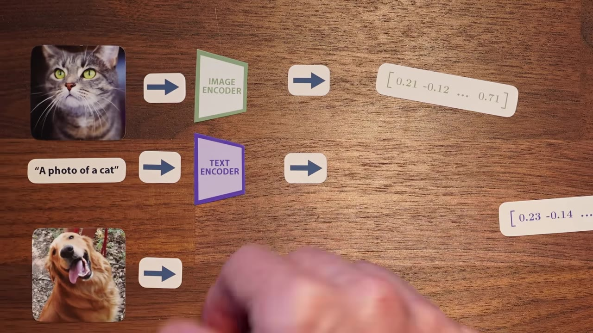
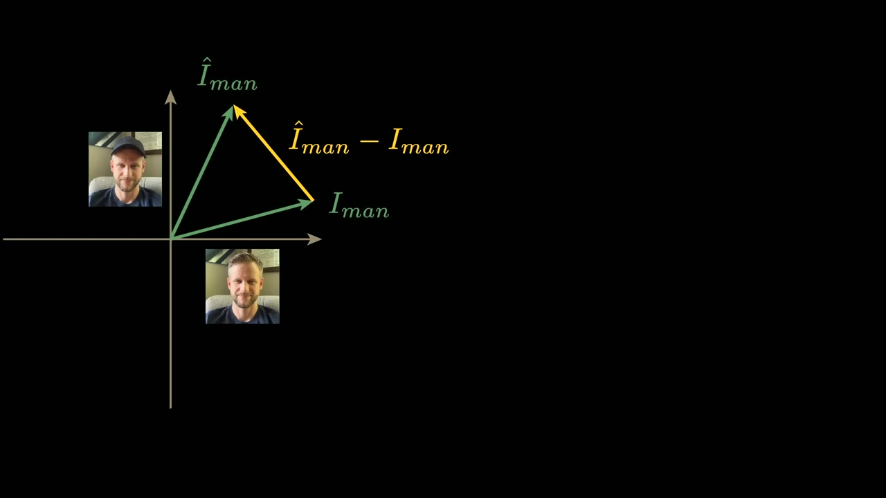
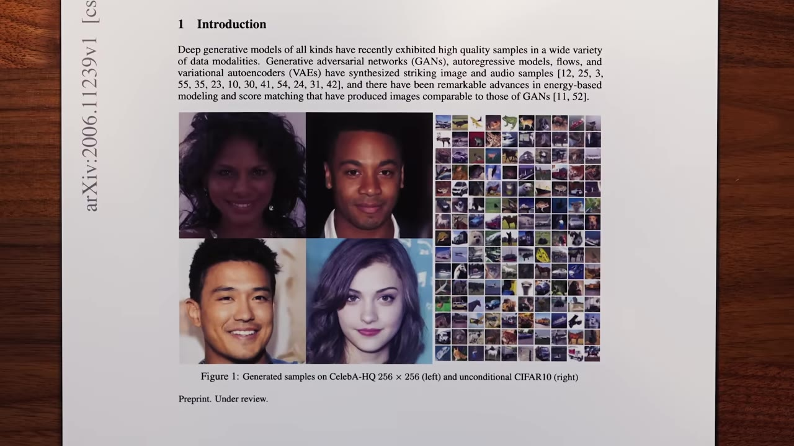
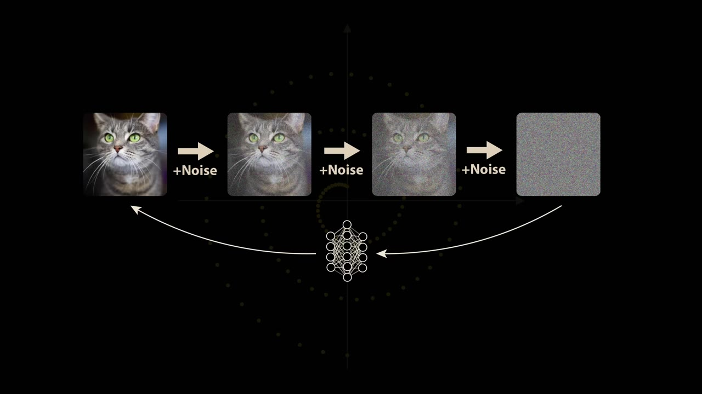
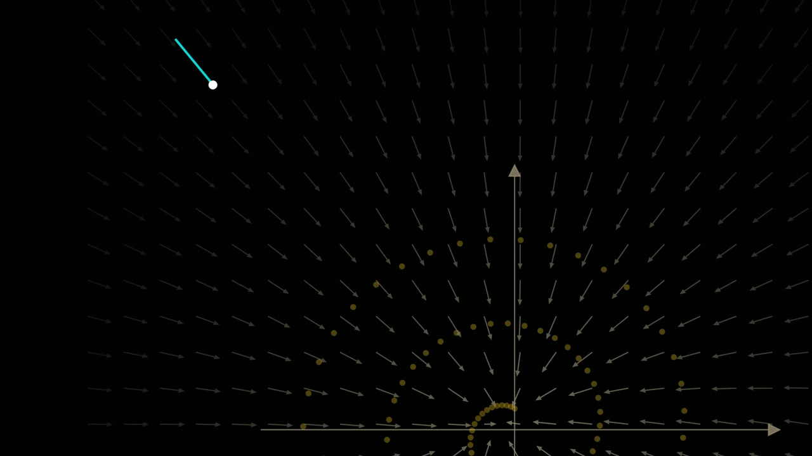
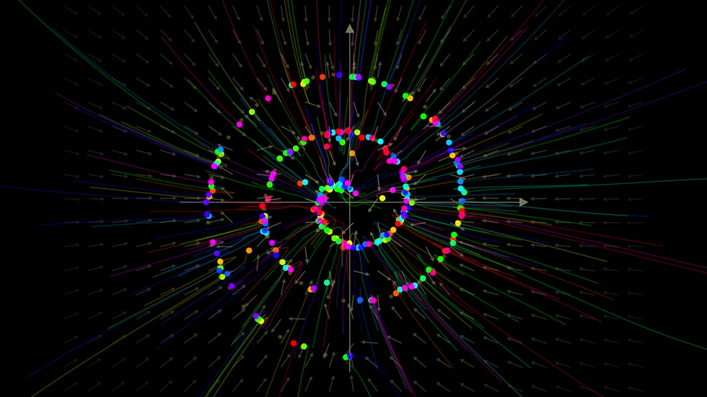
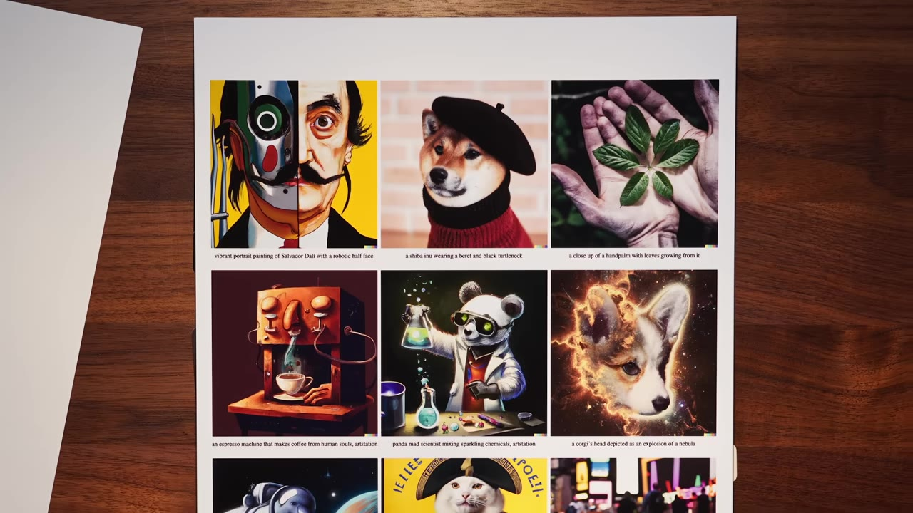
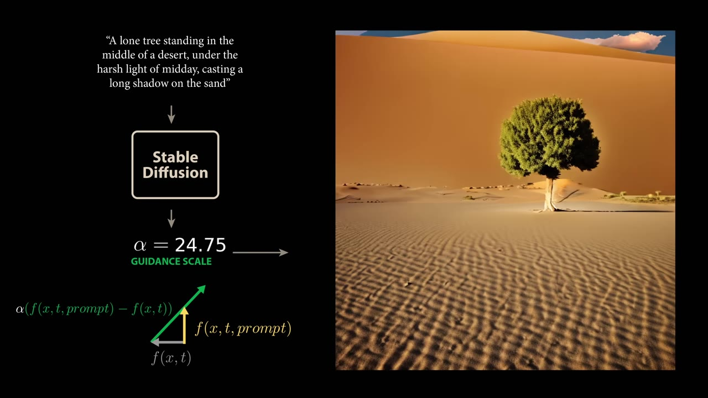
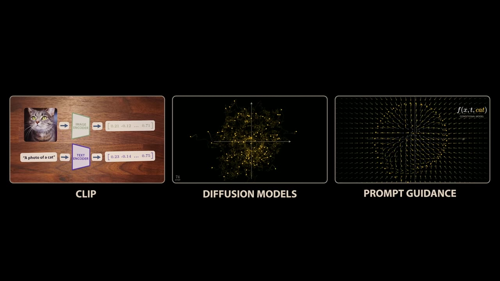

A text-to-video model starts from pure noise and a transformer sculpts it into a scene. The reason that works traces back to Brownian motion, a contrastive trick from 2021, and one more idea that makes prompts actually stick.
Watch on YouTubeOpen up the source code of an open-source video model like Wan 2.1 and the first thing it does is call a random number generator: a video where every pixel intensity is chosen at random. That pure-noise clip goes into a transformer — the same architecture behind ChatGPT — but instead of text it outputs another video, still mostly noise with faint structure. Add that to the noise, pass it back in, repeat fifty times, and you get a sharp, realistic scene.

In February 2021 OpenAI released CLIP, trained on 400 million image-caption pairs scraped from the internet. It's two models — one encodes text, one encodes images — and each emits a length-512 vector. The training objective: a picture and its caption should produce similar vectors. Across a batch, arrange image vectors as columns and text vectors as rows; the diagonal holds the matching pairs.

The learned geometry has a strange property. Take a photo of yourself wearing a hat and one without, encode both, and subtract. Then search a few hundred common words for the text vector closest to that difference. The top match, at cosine similarity 0.165, is hat — followed by cap and helmet.

The learned geometry of CLIP's embedding space allows us to operate mathematically on the pure ideas or concepts in our images and text.— Welch Labs
But CLIP only runs one direction: it maps images and text into the space. It can't generate anything from a vector. That's the missing half.
A few weeks after the GPT-3 paper, a Berkeley team published Denoising Diffusion Probabilistic Models — DDPM — the first method to generate genuinely high-quality images by reversing a noising process. The intuitive version (train the model to undo one noise step at a time) does not work, and almost no modern model does it that way.

Shrink images to two pixels and each one becomes a point on a scatter plot. Lay the training data out in a spiral. Adding noise to an image is a random step; adding lots of noise sends each point on a random walk away from the spiral — exactly the Brownian motion that gives diffusion models their name.

Asking the model to reverse the walk means: given a point far from the spiral, point back toward it. Across many walks through the same neighborhood the random directions average out, and a clear signal — pointing home — remains.
Training the model to predict the total noise (the vector straight back to x0) instead of a single step turns out to be mathematically equivalent — but with far lower variance, so the model learns much faster. What it learns, for every point and every noise level, is a direction pointing toward more likely, less noisy data: the score function.

DDPM's cost was the large number of steps, each a full pass through a big network. A pair of papers from Stanford and Google Brain showed you can drop the random noise entirely. Write the DDPM process as a stochastic differential equation, then use the Fokker-Planck equation from statistical mechanics to find an ordinary differential equation — no random term — that yields the same final distribution.

CLIP and diffusion fit together. A diffusion model can invert the CLIP image encoder to generate images; the CLIP text encoder's output can steer that generation toward what you asked for. In 2022 OpenAI did exactly this — unCLIP, better known as DALL·E 2 — feeding the text vector in as an extra input so the model uses it to denoise more accurately.

But conditioning alone falls short. Prompt Stable Diffusion (the open-source contemporary from Heidelberg) for a tree in the desert with conditioning only, and you get a desert and a shadow — no tree.
The fix: train the model to sometimes see no class or text at all, so it can produce an unconditioned vector field pointing at the data in general. Subtract that from the conditioned field, and the difference isolates the direction toward what you asked for. Amplify it by a scaling factor alpha.

As we use guidance to point our model's vector field more in the direction of our prompt, our tree literally grows in size and detail in our images.— Welch Labs
Wan pushes this further with a negative prompt — writing out the features it doesn't want (extra fingers, walking backwards), passed to the encoder in Chinese, then subtracted and amplified to steer away.
CLIP for a shared space of ideas, diffusion for generation, guidance to steer — three ideas from three groups, built largely from simple geometric intuitions that somehow survive into spaces of staggering dimension.

The resulting models feel like a fundamentally new class of machine. To create incredibly lifelike images and video, you no longer need a camera. All you need is language.— Welch Labs